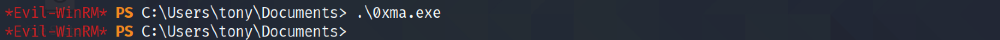

April 26, 2022
Ricoh Printer Driver Privilege Escalation
In this tutorial, we will see how to escalate our privileges from a standard user to SYSTEM level privileges. The target has Ricoh printer driver installed on the system which has a privilege escalation vulnerability. For this exploit to work, it is important to have standard user access on the system.
Let's generate a 64-bit meterpreter executable using msfvenom.
This shows the generated executable which we intend to upload and execute on the target.
It uploads the executable to the target.
The file has been successfully upload.
Let's create a metasploit listener with the payload we have generated and the IP address and port on which we are listening.
Run the meterpreter executable.
We get a reverse shell on the metasploit listener. We can see that the target is running 64-bit Windows 10. And the current user is "tony".

ps lists all the processes on the system. For this exploit to work, we need to migrate to the "explorer.exe" process.
It migrates to the "explorer.exe" process.
background puts the current session in the background. use exploit/windows/local/ricoh_driver_privesc sets the "ricoh_driver_privesc" to be used on the target. Note that the meterpreter session was using session number 1. We use set SESSION 1 becauase we want this exploit to be used in the session that we had put in the background earlier.

After running the exploit, another meterpreter session is opened (meterpreter session 2). Now we have "NT AUTHORITY\SYSTEM" access on the system.
If you liked reading this article, you can follow me on Twitter: mujtabareads.
- Capture Hashes with SCF File
- Privilege Escalation via Server Operators Group
- Exploit PrintNightmare
- Extract Passwords with LaZagne
- Local Privilege Escalation on Linux Kernel < 4.4.0-116
- Bruteforce Windows Server SMB Credentials with Medusa
- Brute Force Windows Server SMB Credentials with Hydra
- Brute Force Windows Server SMB Credentials with NCrack
- Brute Force Windows Server SMB Credentials with CrackMapExec
- Brute Force Windows Server SMB Credentials with Metasploit